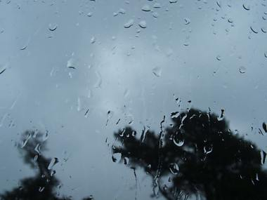

Amanda Yskamp
Letter
This letter’s best dress is rain,
I write you. An unapologetic
downpour drums the zinc roof
so nothing can vanish.
Everything finds its way
onto this sprouting balcony,
into my strained grammar.
If you get my drift, I write,
some continental changes
occur particle by particle.
This close to the equator
the habit is to leave a part of yourself
at the houses where you’ve been treated
graciously, a finger, a lash, a full suit
of skin. If your reception was sour,
it’s common to pack
right in front of your host,
taking what’s yours, as well as all the family
portraits hung on the walls
and those of family members out of favor,
stashed away in bureau drawers.
Refused entry, wave a dollar, create
a misunderstanding, sulk like a brat.
Needless to say, it’s tough making friends here;
homicide would almost be easier.
You see how I miss you?

In This River Against Ownership
I wanted to walk the river
as far as it went but I didn’t.
I was ten
and heard my parents
and came back. But my sneakers had filled
with water slipping on the wet bed stones,
getting somewhere. I was beginning to see
the sorts of softer plants
that grew beside, what collected
in the eddies, the shape of gravity and melt,
how the gully walls rose around the cleft.
I saw where a corpse could lie for years while someone walked free.
It was growing dark. I was running out of time, lost in the plot of water.
At last I could speak aloud alone, ask
who else had washed off what smell
in this river against ownership?
When their voices reached me with my given name,
a baying on the air, I turned back and into myself,
hurried back, so they wouldn’t find or claim me.
Poet and fiction writer Amanda Yskamp has published work in such magazines as Threepenny Review, Hayden’s Ferry Review, The Georgia Review, and Caketrain. This has been a good year so far; Amanda received the Oboh Prize and was nominated for a Pushcart. She lives with poet Douglas Larsen and their two children on the 10-year flood plain of the Russian River, where she teaches correspondence courses and writes articles for the local free paper.
|